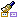
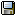

The diagrams edition view¶
The diagram edition view¶
Key:
- 1. Name and type of the diagram.
- 2. The diagram palette.
- 3. Extended palette icon group.
- 4. Reduced palette icon group.
- 5. Diagram toolbar.
Main diagram edition view commands¶
From the diagram palette:
- Create element [Palette icon of your choice] : Creates the element corresponding to the selected palette icon in the diagram.
From the diagram toolbar:
- Mask [] : Masks the selected element(s).
- Show/Hide grid [] : Shows or hides the grid in the diagram, making it easier to align elements.
- Clone graphic options [] : Clones the graphic options defined for a selected element in order to apply them to another element in the diagram.
- Align elements [] : Alignment tools, in which you can choose how you want to align selected elements.
- Auto size [] : Automatically resizes the selected element(s).
- Copy the diagram as a graphic [
 ] : Copies the contents of the diagram to the clipboard.
] : Copies the contents of the diagram to the clipboard.
- Save the diagram in a file [] : Opens the “Save as” window, in which you can configure the saving of your diagram in a file.
- Print the diagram [
 ] : Prints the content of the diagram.
] : Prints the content of the diagram.
- Zoom out [
 ] : Zooms out.
] : Zooms out.
- Zoom to 1:1 [] : Switches to 1:1 scale.
- Zoom in [
 ] : Zooms in.
] : Zooms in.
From the diagram contextual menu:
- Create an element [ – Create an element] : Creates the element of your choice in the selected element.
- Add stereotype(s) on an element [ – Add stereotype(s)…] : Adds one or several stereotypes to the selected element.
- Select in explorer [ – Select in explorer / Ctrl-Enter key] : Selects the element in the “Model” view.
- Mask an element [ – Mask selection / Ctrl-M key] : Masks the element(s).
- Delete an element [
 – Delete selection / Del key] : Deletes the selected element(s).
– Delete selection / Del key] : Deletes the selected element(s).
- Unmask [Unmask] : Unmasks the element(s) of your choice.
Note: For more information, see “Creating elements in a diagram” and more generally the “Modelio diagrams” chapter.